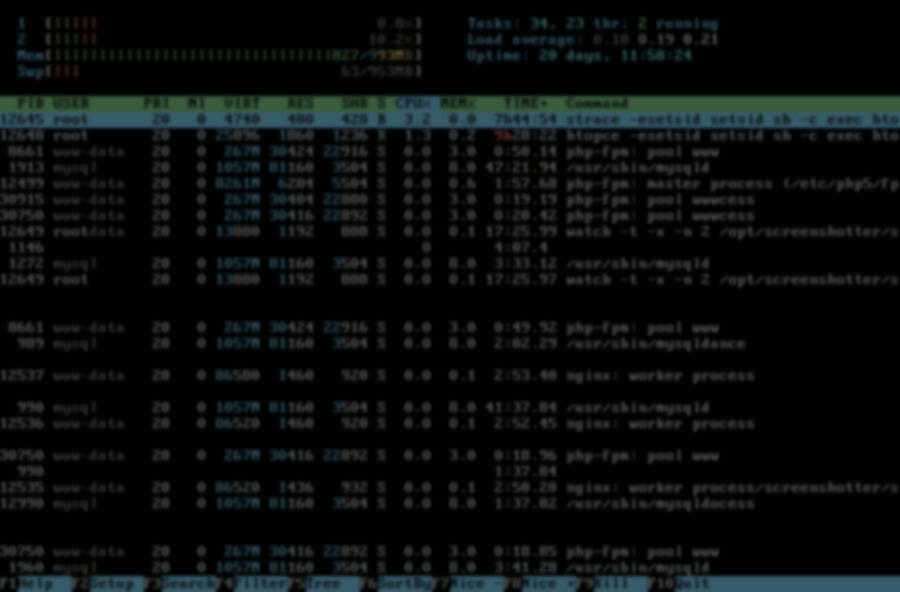
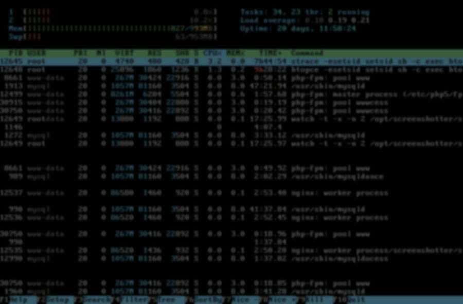
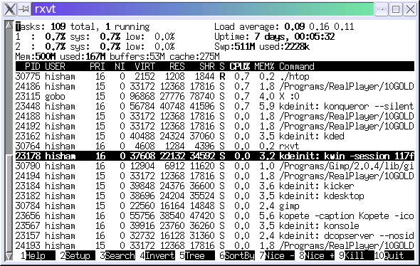

Screenshots
Htop is of course a text-mode program, but here are some screenshots of it running in terminals:
New-style graphs using Braille Unicode characters, inspired by vtop,

Tree view, drawn with Unicode characters, new in htop 1.0:

htop 1.0 showing the CPU average meter in graph mode:

Since htop 1.0, there is better visual support for large numbers of processors. Here's a 64-core machine:
{kind=link}
Configuring I/O scheduling priority (press "i"), new in htop 1.0.2:

Configuring CPU affinity (press "a"), new in htop 0.7:

Tree view, SMP, and other features available since htop 0.5:

Color themes are available since htop 0.5.4, to suit both dark and light terminals:

Default look, as of htop 0.4:

A more conservative setup, using a monochrome terminal:

The meters at the header are fully customizable:

An impressive setup: htop running on a machine with 128 cores and 1TB of RAM:

And thanks to htop's 4-column display mode, you can fit even more cores in a screen with ease and still have left for process information: here's a POWER8 machine with 176 cores! (Thanks to @stdlib for the screenshot)

And here's the other extreme -- htop running on the tiny Raspberry Pi: